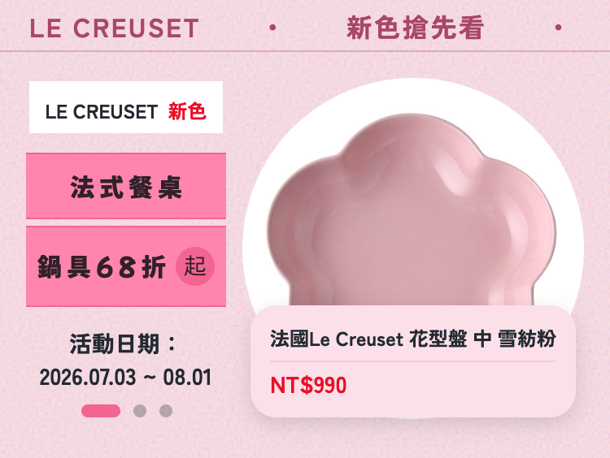
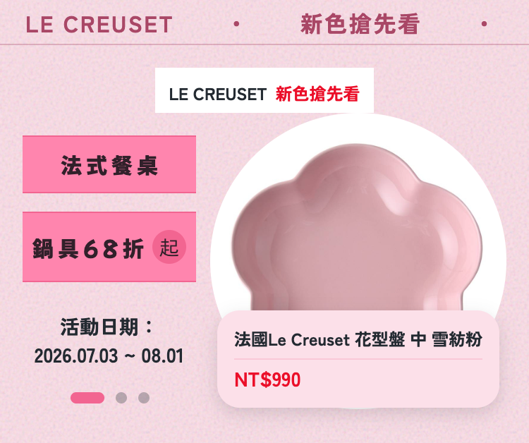
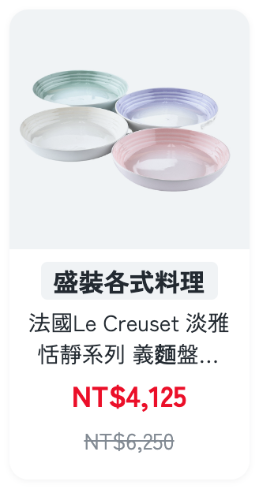
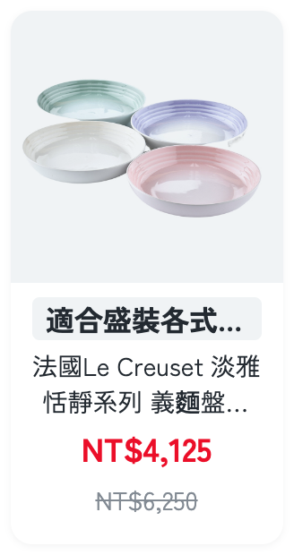
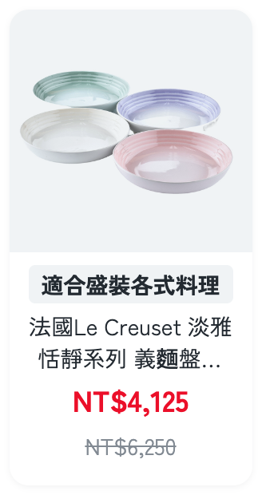
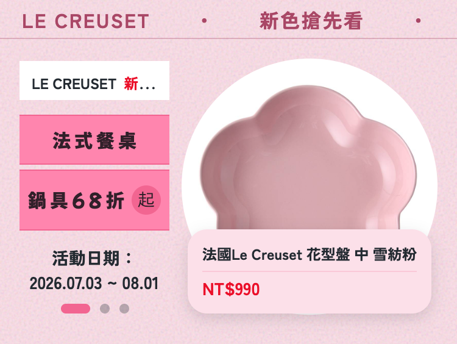
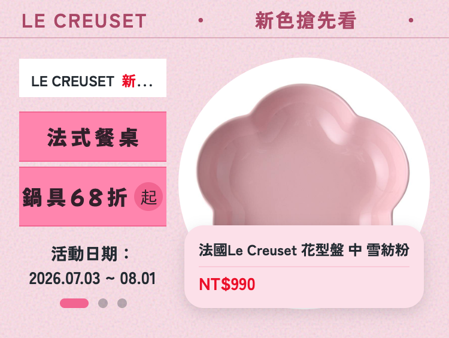
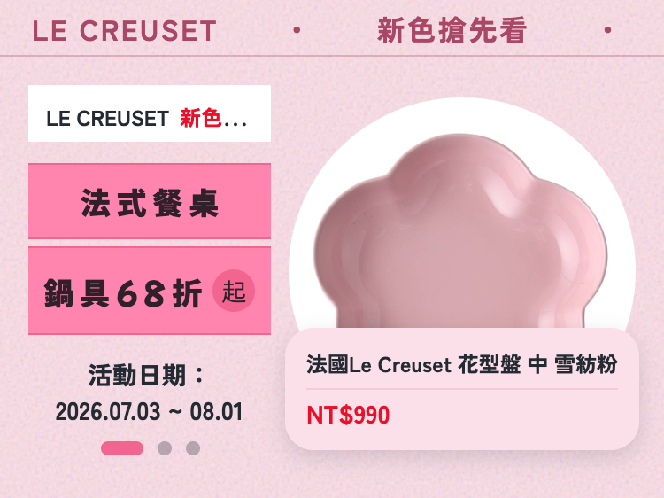

Q1｜KV 眉標——12px 不折行在左欄的截斷取捨

Q1a接受 ellipsis（現行上線版）
位置與桌機一致；LC 截為「LE CREUSET 新…」，四資料集皆截斷

Q1b縮短文案（示例：新色搶先看→新色）
位置一致＋完整顯示；眉標是資料層欄位、營運可逐活動改

Q1c全寬置頂
完整顯示；但位置跨兩欄、與桌機排版不一致
三題視覺選項（LC 資料集 mobile 375 實拍；回覆格式：如「Q1c、Q2a、Q3b」）








附註：Q1b/Q2a 的替代文案僅為視覺示例，正式潤飾會逐件過真值保真比對；Q3b/Q3c 若選用會同步回寫 09 縮字常數與裁決紀錄。